I start my day off at 6 o’ clock , with my first task being to (action verb) the chickens and (action verb) the cows. I carry my grandfather’s dying wish for me to continue his (verb -ing) legacy, and I do it every day. My (adjective) livestock all (verb) me each morning because I (verb) them. Making a (object noun) in this town hasn’t been easy, but thankfully, I have (noun) to keep me at peace. Another way I make money is by mining. This town has caves with (plural noun) and ores. I’ve had to learn how to use a (noun) for a weapon because there are so many (adjective) monsters down there! There are secrets about this town, and I’ve seen some things… Like (adjective) slimes and (adjective) ghosts. I swear!


 
